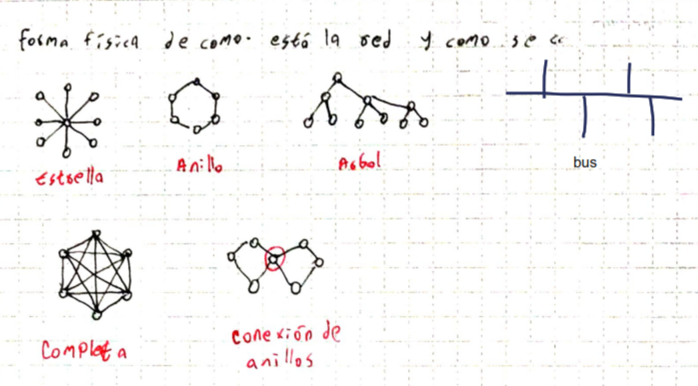

TP: Pares trenzados, es el mas barato y facil de usar
| Multimodal | Monomodal | |
|---|---|---|
| Nucleo (micrometros) | 50 | 5 |
| LED | Laser o LED (esta optimizado para laser) | |
| Velocidad | No es muy rapido | Es mas fast |
| Usos comunes | Redes LAN | Largas distancias en la calle |
| Atenuacion | Alta | Baja |
Roaming
Han-over
Comunicaciones analogas vs digitales
Codificaciones
Señalizacion
Forma fisica o logica de organizar la red
Ancho de banda (hz)
Throughput (bps)
Tasa de transmisión
Velocidad de transmision (bps)
Ultimo kilometro
Atenuacion